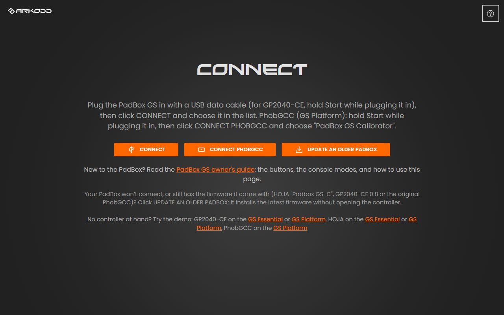
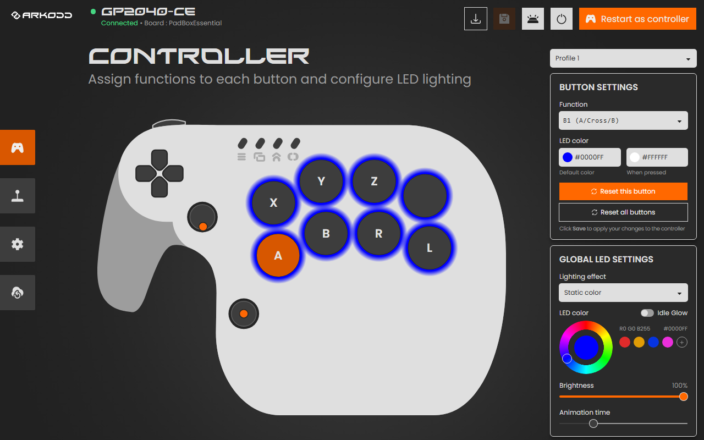
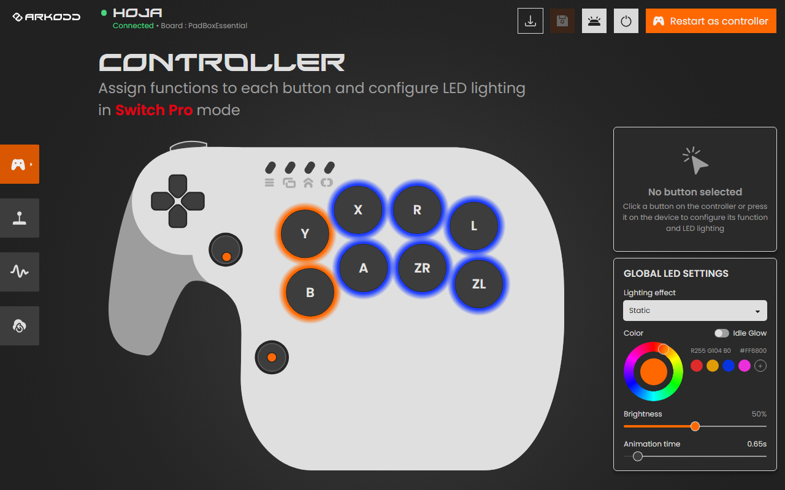
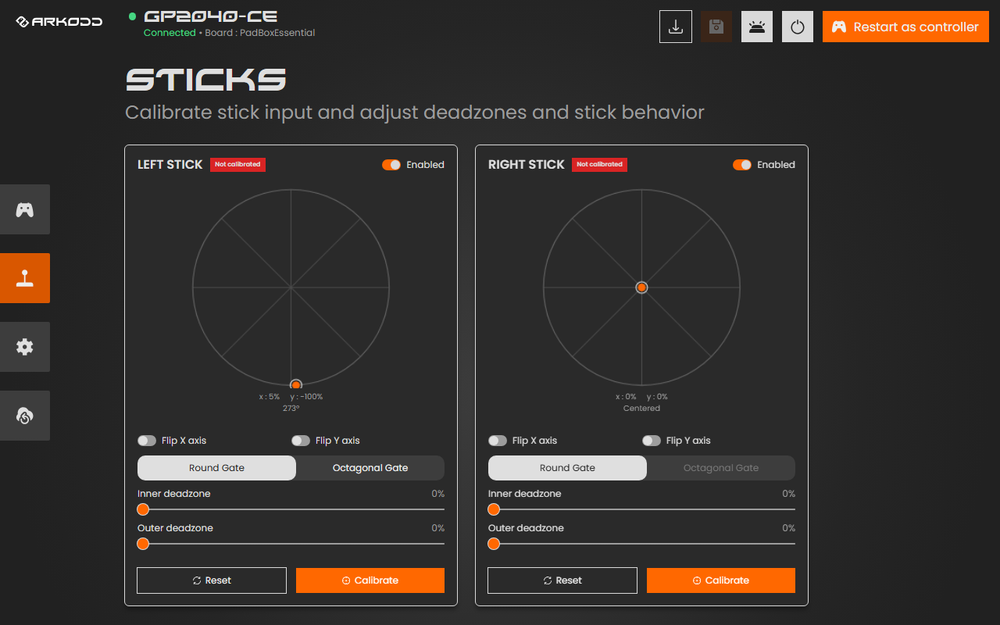
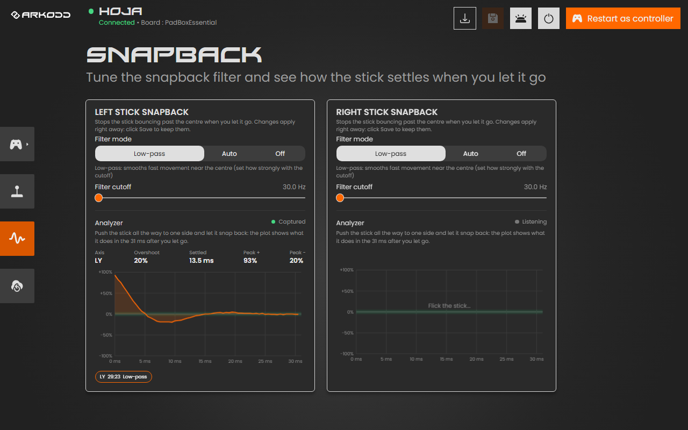
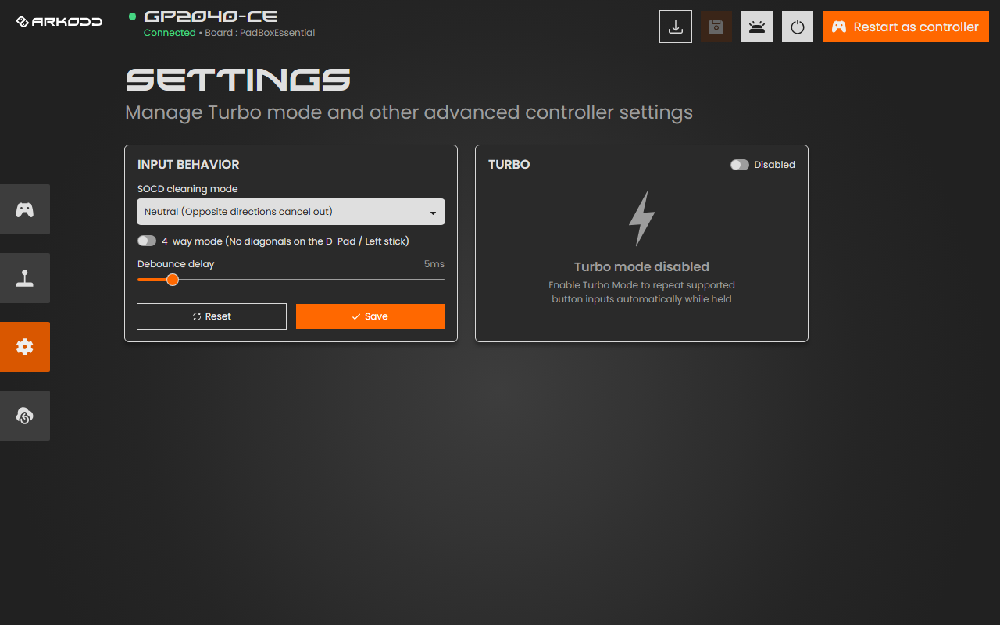
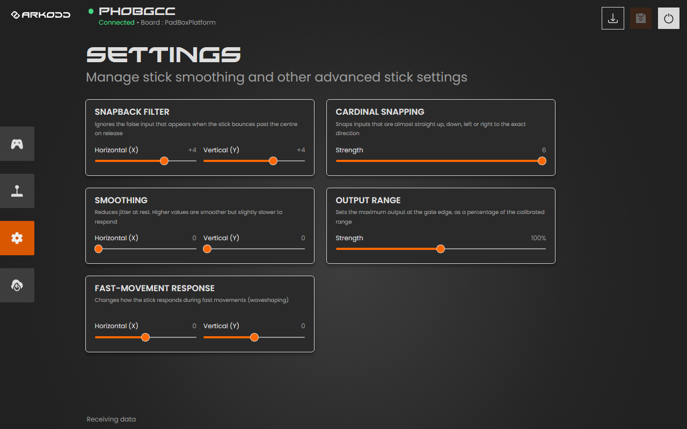
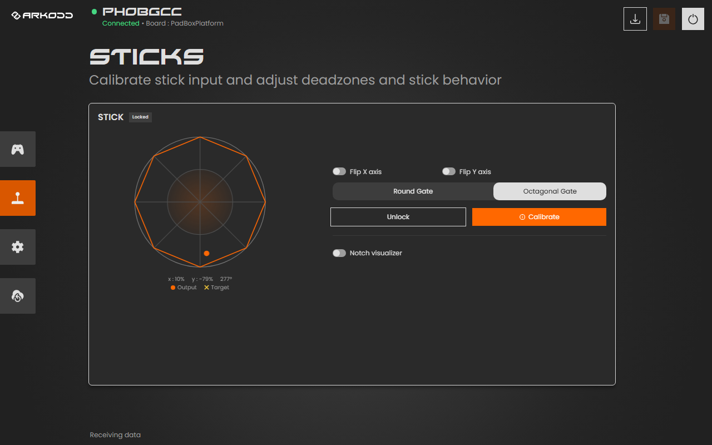
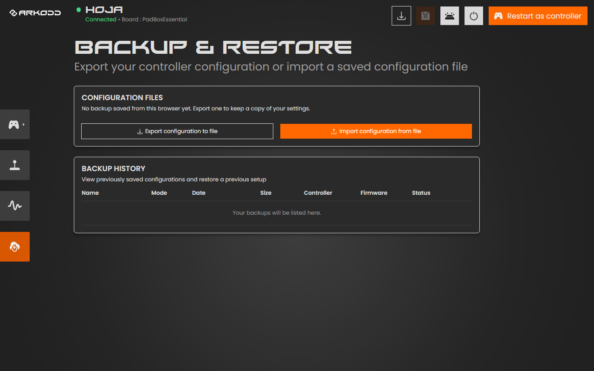
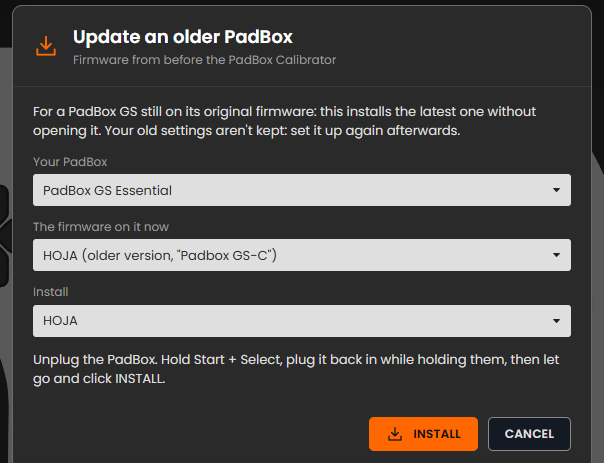

01Meet your PadBox GS
The PadBox GS comes in two layouts. Both have eight face buttons, a D-pad, four menu buttons and a bumper on top.
- PadBox GS Essential: two analog sticks, one on the top left and one lower down for your thumb.
- PadBox GS Platform: one analog stick on the top left, plus a C-stick made of four buttons and an extra A button under the face buttons. It's laid out for platform fighters.
The face buttons have fighting-game names: the top row is 1P 2P 3P 4P (punches) and the bottom row is 1K 2K 3K 4K (kicks). This guide uses those names, because what each button does changes with the mode and your own remapping.
GS Essential
GS Platform
On the Platform, the four buttons marked C↑ C→ C← C↓ are the C-stick (up, right, left, down) and the button between them is an extra A. The four small buttons at the top are, from left to right, Start, Select, Home and Touchpad. On the Essential, pressing a stick down clicks it (L3 and R3).
02The three firmwares
The firmware is the software inside the PadBox. It decides which consoles it works with and which settings you can change. You can switch between them at any time from the Configurator, for free.
HOJA
The all-rounder. Switch, PC, GameCube, N64 and SNES modes, LED effects, stick calibration with notch alignment, and a snapback filter you can tune and test.
Connects to the Configurator by simply plugging it in.
GP2040-CE
Popular with fighting-game players. PC (XInput), Switch, PS3, PS4, PS5, Xbox One and keyboard modes, SOCD cleaning, turbo and button profiles.
Connects to the Configurator by holding Start while plugging it in.
PhobGCC
The GameCube firmware loved by Melee players, with PhobGCC's own notch-by-notch stick calibration, snapback filtering and smoothing.
Connects to the Configurator by holding Start while plugging it in.
Not sure which one you have? Connect it to the Configurator: the firmware's name is written at the top left of the page.
03Picking a mode when you plug in
Hold one button while you plug the cable in, and keep holding it for a second. The PadBox starts in that mode. If you hold nothing, it starts in its default mode.
HOJA
| Hold while plugging in | Mode | Use it for |
|---|---|---|
| 1K | Switch Pro | Nintendo Switch, and PC games that support Switch controllers |
| 2K | SInput | PC (Steam) |
| 1P | XInput | PC and anything that takes an Xbox controller |
| 2P | Slippi | Super Smash Bros. Melee on Slippi (PC) |
| D-pad ← | SNES | SNES consoles and adapters |
| D-pad ↓ | Nintendo 64 | N64 consoles and adapters |
| D-pad → | GameCube | GameCube and Wii consoles, GameCube adapters |
| Nothing | Your default mode | Set it on the Configurator's CONTROLLER page (see Buttons and lights) |
GP2040-CE
| Hold while plugging in | Mode |
|---|---|
| Start | Configuration mode, to use the Configurator |
| 1K | Nintendo Switch |
| 2K | XInput (PC and Xbox-style controller). This is also the default. |
| 1P | PS4 |
| 2P | PS5 |
| Essential: 3P · Platform: 3K | Xbox One |
| Essential: 3K · Platform: 3P | Keyboard |
| Essential: 4K · Platform: 4P | PS3 |
GP2040-CE remembers the last mode you picked, so you only need to hold the button once when you change console.
04Connecting to the PadBox Configurator
The Configurator is a web page, so there's nothing to install. It talks to the PadBox over USB, which needs Google Chrome or Microsoft Edge on a computer (Windows, macOS, Linux or ChromeOS). Safari and Firefox can't do this, and neither can phones.

- Open arkodd.github.io/padbox in Chrome or Edge.
- Plug the PadBox in with a USB data cable. Some cables only charge and carry no data; if nothing shows up, try another cable.
- HOJA: just plug it in.
- GP2040-CE: hold Start while plugging it in.
- PhobGCC: hold Start while plugging it in.
- Click CONNECT (HOJA and GP2040-CE) or CONNECT PHOBGCC (PhobGCC). A small list opens at the top of the browser: choose your PadBox and click Connect. For PhobGCC it's called "PadBox GS Configurator" (on older PhobGCC firmware: "PadBox GS Calibrator").
- The Configurator opens on the CONTROLLER page. The next time, it reconnects by itself as soon as you plug the PadBox in.
The connect screen has demo links for every firmware and layout. They're a good way to look around before you plug anything in.
05The top buttons
The same few buttons sit at the top right of every page.
- Update firmware. Installs the latest version, or switches to another firmware. A red dot appears on it when an update is out.
- Save. Turns orange when you've changed something. Click it to store your changes in the PadBox, so they stay after you unplug it.
- Preview LED. Shows your new light settings on the PadBox (GP2040-CE and HOJA).
- Disconnect. Lets go of the PadBox so you can unplug it or use it in another program.
- Restart as controller. Restarts the PadBox as a normal controller so you can play right away (GP2040-CE and HOJA).
On HOJA and PhobGCC most changes work on the PadBox right away so you can try them; GP2040-CE applies them when you click Save. Either way, only Save keeps them after you unplug. If you close the page with unsaved changes, the browser asks you first.
06Buttons and lights
The CONTROLLER page shows your PadBox. Each button is labelled with what it does right now.

Change what a button does
- Click a button on the drawing, or simply press it on the PadBox. It turns orange and BUTTON SETTINGS opens on the right.
- Pick its new job in Function. The label on the drawing changes straight away.
- Click Save, then press the button on the PadBox to try it.
Reset this button puts back its original function; Reset all buttons does that for every button. On GP2040-CE, the Profile menu at the top lets you keep several layouts and switch between them.
HOJA: one layout per mode

HOJA remembers a different button layout for each mode, so your Switch layout and your PC layout don't get in each other's way. Click the gamepad button at the top of the left menu (it has a small arrow) to choose which mode you're editing. The mode you pick there also becomes the default mode the PadBox starts in when you hold no button.
Lights
Under GLOBAL LED SETTINGS:
- Lighting effect: static color, rainbow and other animations.
- Color: drag on the wheel or click one of the color dots. The + saves your own color for later.
- Brightness and Animation time (how fast the effect moves).
Each button can also have its own color, plus a second color for when it's pressed: select the button and set LED color.
07Sticks
The STICKS page shows each stick live: the orange dot is where your stick is. Calibrate once when you get your PadBox, and again if the stick ever drifts or doesn't reach the edges.

Calibrate a stick (HOJA and GP2040-CE)
- Click Calibrate under the stick.
- GP2040-CE only: let go of the stick so it rests in the middle, then click Next.
- Roll the stick slowly around the edge 3 times, pressing into every corner of the gate.
- Click Finish (GP2040-CE) or Stop (HOJA). The badge turns green: Calibrated.
- Click Save.
The other stick settings
| Setting | What it does |
|---|---|
| Flip X / Flip Y axis | Turns left into right, or up into down. |
| Round / Octagonal Gate | Matches the drawing to the shape of your stick's gate. |
| Inner deadzone | Ignores tiny movements around the centre. Raise it a little if a character walks on its own. |
| Outer deadzone | Lets you reach full tilt slightly before the edge. |
| Curve (HOJA) | Changes how the stick responds near the centre: above 1.00 gives finer control for small movements. |
| Angle set (HOJA) | Lines a notch up exactly: hold the stick in a notch, then click Angle set. |
| Enabled | Turns a stick off completely. |
| Reset | Puts this stick's settings back to how they were when you connected. |
08Snapback (HOJA)
When you flick a stick and let go, it can bounce past the centre for a few milliseconds. Games can read that bounce as a short input the other way. The SNAPBACK page (wave icon) removes it, and lets you see it.

- Low-pass (the default) smooths quick movement near the centre. Filter cutoff sets how strongly: lower removes more bounce but feels slightly slower, higher feels snappier. 60 Hz is a good start.
- Auto watches for the moment you let go and only blocks the bounce then.
- Off sends the stick exactly as it is.
Test it with the analyzer
- Push the stick all the way to one side and let it snap back.
- The graph shows the next 31 milliseconds. The green band is the centre: Overshoot is how far it bounced past, Settled is when it stayed in the centre.
- Change the filter and flick again. Your last few flicks are kept under the graph so you can click between them and compare.
09Settings
GP2040-CE

- SOCD cleaning mode: what happens when two opposite directions are held at once (left + right, up + down). Fighting-game tournaments often set a rule for this; Neutral is the safe default.
- 4-way mode: no diagonals on the D-pad and left stick, for games like Pac-Man.
- Debounce delay: filters out accidental double presses. Keep it low.
- Turbo: repeats a button automatically while you hold it.
PhobGCC

- Snapback filter: removes the bounce when the stick is let go.
- Cardinal snapping: makes almost-straight inputs perfectly straight up, down, left or right.
- Smoothing: reduces jitter at rest; higher is smoother but slightly slower.
- Output range: how far the stick reaches at the edge of the gate.
- Fast-movement response: how the stick reacts to very fast movements.
10PhobGCC calibration (GS Platform)
PhobGCC calibrates the stick notch by notch, so each notch of your gate lands exactly where Melee expects it.

- Unlock the PadBox if the badge says Locked. The button does it for you (on the PadBox it's 1K + 1P + 2P + Start held for about a second).
- Click Calibrate. The steps appear on the right.
- Capture: for each step, move the stick where the yellow ✕ is (the middle, or a notch) and press Advance (or 1K).
- Line up each notch: hold the stick in the notch named on screen and use the − / + buttons until the orange dot sits on the ✕, then press Advance.
- When it says Calibration complete, it's stored in the PadBox.
Notch visualizer: turn it on, then roll the stick slowly around the gate. A blue outline traces your gate, so you can see each notch, along with the exact Melee coordinates.
11Backup and restore

- Export configuration to file saves all your settings (buttons, lights, stick settings) to a file on your computer. Do it before trying big changes or updating the firmware.
- Import configuration from file puts a saved file back on the PadBox.
- Backup history lists the backups made in this browser: click one to restore it.
A backup only goes back onto the same PadBox model with the same firmware. Stick calibration stays in the controller and isn't part of a backup.
12Updating or switching the firmware
- Connect the PadBox and click Update firmware (the download arrow at the top right).
- Choose what to install: the firmware it runs now (to update it) or another one (to switch).
- Click install. The PadBox restarts into update mode and the browser may ask you to pick it once more ("RP2 Boot"). Don't unplug it until it says it's done.
- Reconnect. If you switched firmware, use that firmware's way of connecting (see Connecting).
If your PadBox still has the firmware it shipped with, or won't connect at all, see the next section: Update an older PadBox.
13Update an older PadBox
PadBoxes sold before the PadBox Configurator existed came with older firmware that the Configurator can't set up. The UPDATE AN OLDER PADBOX button on the connect screen installs the latest firmware on them, straight from the browser, without opening the controller or pressing anything inside it.
Do I need it?
Use it if your PadBox runs one of these, or if CONNECT can't find your PadBox at all:
- HOJA, older version: shows up as "Padbox GS-C". If you plug one in and click CONNECT, the Configurator notices it's an older version and opens this window for you.
- GP2040-CE version 0.8.
- The original PhobGCC (GS Platform).
Your old settings aren't carried over: after the update you'll set up your buttons, lights and sticks again in the Configurator. Use Chrome or Edge on a computer, with a USB data cable.

Step by step
- Open arkodd.github.io/padbox and click UPDATE AN OLDER PADBOX.
- Your PadBox: choose GS Essential or GS Platform. Pick carefully: in update mode the PadBox can't tell the page which one it is.
- The firmware on it now: choose what your PadBox runs today.
- Install: choose the firmware you want. It starts on the same one you have now; you can also switch to another one here.
- Put the PadBox into update mode: unplug it, hold the buttons for your old firmware, plug it back in while holding them, then let go and click INSTALL.
Firmware on it now Buttons to hold HOJA (older version) Start + Select GP2040-CE 0.8 Select + Start + D-pad ↑ PhobGCC (original) Start + Select - When the browser's list opens, choose "RP2 Boot" and click Connect.
- Wait while it installs, and don't unplug the PadBox. When it says Done, the PadBox restarts on its new firmware by itself.
- Close the window and connect as usual (see Connecting): HOJA just plugs in; for GP2040-CE and PhobGCC, hold Start while plugging in. Then set up your PadBox and click Save.
If the browser can't install it directly
Some computers don't let the browser write to the PadBox. The window then offers DOWNLOAD FIRMWARE instead. Click it, and drag the downloaded file onto the RPI-RP2 drive that appeared on your computer when the PadBox went into update mode. The PadBox restarts on the new firmware by itself.
14Troubleshooting
Nothing appears in the list when I click CONNECT
Use Chrome or Edge on a computer, and a USB cable that carries data. For GP2040-CE and PhobGCC, hold Start while plugging in. Try another USB port, without a hub.
"The PadBox is busy"
Only one program can talk to the PadBox at a time. Close other Configurator tabs and any other controller software, then click CONNECT again.
My changes were gone after unplugging
Click Save before unplugging. The Save button is orange when there are unsaved changes.
My character moves on its own (stick drift)
Calibrate the stick again, letting go of it fully when asked. If it still moves, raise the Inner deadzone a little.
The stick doesn't reach the edge, or diagonals feel short
Calibrate again and press firmly into every corner while rolling the stick. You can also raise the Outer deadzone slightly.
The console doesn't recognise the PadBox
Unplug it, hold the button for that console's mode (see Picking a mode) and plug it back in.
The firmware update stopped halfway
Unplug it, open the Configurator and use UPDATE AN OLDER PADBOX to install the firmware again.